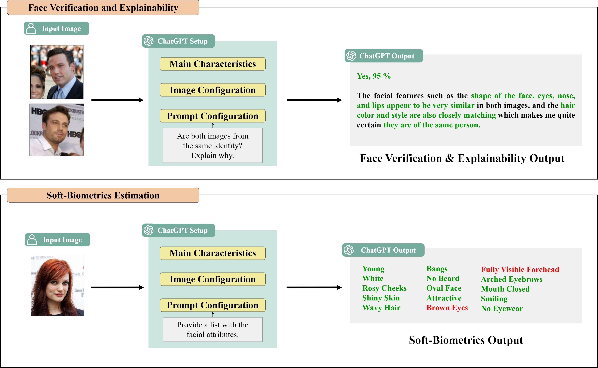

How Good is ChatGPT at Face Biometrics?
A First Look into Recognition, Soft Biometrics, and Explainability

Large Language Models (LLMs) such as GPT developed by OpenAI, have already shown astonishing results, introducing quick changes in our society. This has been intensified by the release of ChatGPT which allows anyone to interact in a simple conversational way with LLMs, without any experience in the field needed. As a result, ChatGPT has been rapidly applied to many different tasks such as code- and song-writer, education, virtual assistants, etc., showing impressive results for tasks for which it was not trained (zero-shot learning). The present study aims to explore the ability of ChatGPT, based on the recent GPT-4 multimodal LLM, for the task of face biometrics. In particular, we analyze the ability of ChatGPT to perform tasks such as face verification, soft-biometrics estimation, and explainability of the results. ChatGPT could be very valuable to further increase the explainability and transparency of automatic decisions in human scenarios. Experiments are carried out in order to evaluate the performance and robustness of ChatGPT, using popular public benchmarks and comparing the results with state-of-the-art methods in the field. The results achieved in this study show the potential of LLMs such as ChatGPT for face biometrics, especially to enhance explainability. For reproducibility reasons, we release all the code in GitHub.
I. DeAndres-Tame, et al., "How Good Is ChatGPT at Face Biometrics? A First Look Into Recognition, Soft Biometrics, and Explainability", IEEE Access, 12:34390–34401, 2024
@ARTICLE{10445251,
author={DeAndres-Tame, Ivan and Tolosana, Ruben and Vera-Rodriguez, Ruben and Morales, Aythami and Fierrez, Julian and Ortega-Garcia, Javier},
journal={IEEE Access},
title={How Good Is ChatGPT at Face Biometrics? A First Look Into Recognition, Soft Biometrics, and Explainability},
year={2024},
volume={12},
number={},
pages={34390-34401},
keywords={Chatbots;Face recognition;Task analysis;Image color analysis;Facial features;Estimation;Biological system modeling;Large language models;Biometrics (access control);Explainable AI;Large language models;ChatGPT;face recognition;soft biometrics;explainability},
doi={10.1109/ACCESS.2024.3370437}
}